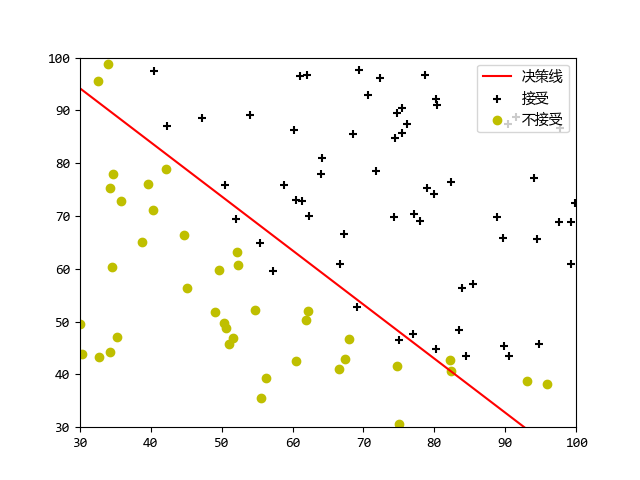
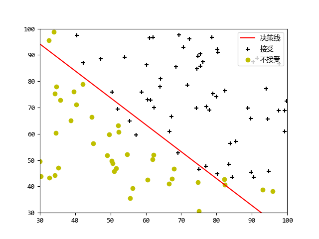

机器学习作业第二周
机器学习
这是第二周逻辑回归的作业，经过上一次的作业，我对ocatve和numpy的语法有了一个感觉，所以转换起来也比较方便了。我这次就像他的原版作业一样，两个执行文件，另外把所有需要自己实现的函数都放在func.py里面了。
这次没有什么需要特别记录的坑点。
ex2.py
from scipy.optimize import minimize
import matplotlib.pyplot as plt
import numpy as np
import scipy.special
from fucs import costFuc, costFunction, gradFuc, load, minimize, plotData, plotDecisionBoundary, predict
if __name__ == "__main__":
# Machine Learning Online Class - Exercise 2: Logistic Regression
#
# Instructions
# ------------
#
# This file contains code that helps you get started on the logistic
# regression exercise. You will need to complete the following functions
# in this exericse:
#
# sigmoid.m
# costFunction.m
# predict.m
# costFunctionReg.m
#
# For this exercise, you will not need to change any code in this file,
# or any other files other than those mentioned above.
#
# Initialization
# 步骤一（替换sans-serif字体）
plt.rcParams['font.sans-serif'] = ['YaHei Consolas Hybrid']
# 步骤二（解决坐标轴负数的负号显示问题）
plt.rcParams['axes.unicode_minus'] = False
# Load Data
# The first two columns contains the exam scores and the third column
# contains the label.
data = load('machine_learning_exam/week2/ex2data1.txt')
X = data[:, 0:2]
# 一定要reshape不然会变成[0,100]的矩阵
y = data[:, 2].reshape(-1, 1)
# ==================== Part 1: Plotting ====================
# We start the exercise by first plotting the data to understand the
# the problem we are working with.
print('Plotting data with + indicating (y = 1)\
examples and o indicating (y = 0) examples.\n')
plotData(X, y)
# Labels and Legend
plt.xlabel('测试 1 分数')
plt.ylabel('测试 2 分数')
plt.legend(['接受', '不接受'], loc='upper right')
plt.title('原始数据集')
# ============ Part 2: Compute Cost and Gradient ============
# In this part of the exercise, you will implement the cost and gradient
# for logistic regression. You neeed to complete the code in
# costFunction.m
# Setup the data matrix appropriately, and add ones for the intercept term
[m, n] = X.shape
# Add intercept term to x and X_test
X = np.hstack([np.ones((m, 1), dtype=float), X])
# Initialize fitting parameters
initial_theta = np.zeros((n + 1, 1), dtype=float)
# Compute and display initial cost and gradient
[cost, grad] = costFunction(initial_theta, X, y)
print('Cost at initial theta (zeros): {}'.format(cost))
print('Expected cost (approx): 0.693')
print('Gradient at initial theta (zeros):')
print(grad)
print('Expected gradients (approx):\n -0.1000\n -12.0092\n -11.2628')
# Compute and display cost and gradient with non-zero theta
test_theta = np.array([-24, 0.2, 0.2]).reshape(-1, 1)
[cost, grad] = costFunction(test_theta, X, y)
print('\nCost at test theta: {}\n'.format(cost))
print('Expected cost (approx): 0.218\n')
print('Gradient at test theta: \n')
print(grad)
print('Expected gradients (approx):\n 0.043\n 2.566\n 2.647')
# ============= Part 3: Optimizing using fminunc =============
# In this exercise, you will use a built-in function (fminunc) to find the
# optimal parameters theta.
# Set options for fminunc
# options = optimset('GradObj', 'on', 'MaxIter', 400)
# Run fminunc to obtain the optimal theta
# This function will return theta and the cost
# [theta, cost] = fminunc(@(t)(costFunction(t, X, y)), initial_theta, options)
# 牛顿共轭法 x0必须是(n,)的向量 jac函数返回值要与x0相同维度
initial_theta = initial_theta.reshape(-1,) # [n,1]=>[n,]
Result = minimize(fun=costFuc, x0=initial_theta,
args=(X, y), method='TNC', jac=gradFuc)
theta = Result.x.reshape(-1, 1)
cost = Result.fun
# Print theta to screen
print('Cost at theta found by fminunc: {}\n'.format(cost))
print('Expected cost (approx): 0.203\n')
print('theta: \n')
print(theta)
print('Expected theta (approx):')
print(' -25.161\n 0.206\n 0.201')
# Plot Boundary
plotDecisionBoundary(theta, X, y)
# ============== Part 4: Predict and Accuracies ==============
# After learning the parameters, you'll like to use it to predict the outcomes
# on unseen data. In this part, you will use the logistic regression model
# to predict the probability that a student with score 45 on exam 1 and
# score 85 on exam 2 will be admitted.
#
# Furthermore, you will compute the training and test set accuracies of
# our model.
#
# Your task is to complete the code in predict.m
# Predict probability for a student with score 45 on exam 1
# and score 85 on exam 2
prob = scipy.special.expit(np.array([1, 45, 85])@theta)
print('For a student with scores 45 and 85, we predict an admission probability of {}'.format(prob))
print('Expected value: 0.775 +/- 0.002')
# Compute accuracy on our training set
p = predict(theta, X)
print('Train Accuracy: ', np.mean(np.array(p == y)) * 100, '%', sep='')
print('Expected accuracy (approx): 89.0')
plt.show()执行效果
➜ Machine_learning /usr/bin/python3 /media/zqh/程序与工程/Python_study/Machine_learning/machine_learning_exam/week2/ex2.py
Plotting data with + indicating (y = 1) examples and o indicating (y = 0) examples.
Cost at initial theta (zeros): 0.6931471805599453
Expected cost (approx): 0.693
Gradient at initial theta (zeros):
[[ -0.1 ]
[-12.00921659]
[-11.26284221]]
Expected gradients (approx):
-0.1000
-12.0092
-11.2628
Cost at test theta: 0.21833019382659774
Expected cost (approx): 0.218
Gradient at test theta:
[[0.04290299]
[2.56623412]
[2.64679737]]
Expected gradients (approx):
0.043
2.566
2.647
Cost at theta found by fminunc: 0.20349770158947478
Expected cost (approx): 0.203
theta:
[[-25.16131857]
[ 0.20623159]
[ 0.20147149]]
Expected theta (approx):
-25.161
0.206
0.201
For a student with scores 45 and 85, we predict an admission probability of [0.77629062]
Expected value: 0.775 +/- 0.002
Train Accuracy: 89.0%
Expected accuracy (approx): 89.0 

ex2_reg.py
正则化逻辑回归
这个程序不但使用了正则化，并且还将数据特征的维度进行了扩展，最终出现曲线
from numpy.core import *
import matplotlib.pyplot as plt
from fucs import costFuc, costFunction, gradFuc, load, minimize, plotData, plotDecisionBoundary, predict, mapFeature, costFunctionReg
if __name__ == "__main__":
# Machine Learning Online Class - Exercise 2: Logistic Regression
#
# Instructions
# ------------
#
# This file contains code that helps you get started on the second part
# of the exercise which covers regularization with logistic regression.
#
# You will need to complete the following functions in this exericse:
#
# sigmoid.m
# costFunction.m
# predict.m
# costFunctionReg.m
#
# For this exercise, you will not need to change any code in this file,
# or any other files other than those mentioned above.
#
# Load Data
# The first two columns contains the X values and the third column
# contains the label (y).
data = load('machine_learning_exam/week2/ex2data2.txt')
X = data[:, :2]
y = data[:, 2].reshape(-1, 1)
plotData(X, y)
# Labels and Legend
plt.xlabel('Microchip Test 1')
plt.ylabel('Microchip Test 2')
# Specified in plot order
plt.legend(['y = 1', 'y = 0'], loc='upper right')
# =========== Part 1: Regularized Logistic Regression ============
# In this part, you are given a dataset with data points that are not
# linearly separable. However, you would still like to use logistic
# regression to classify the data points.
#
# To do so, you introduce more features to use -- in particular, you add
# polynomial features to our data matrix (similar to polynomial
# regression).
#
# Add Polynomial Features
# Note that mapFeature also adds a column of ones for us, so the intercept
# term is handled
X = mapFeature(X[:, 0], X[:, 1])
print(X.shape)
# Initialize fitting parameters
initial_theta = zeros((size(X, 1), 1))
# Set regularization parameter lamda to 1
lamda = 1
# Compute and display initial cost and gradient for regularized logistic
# regression
[cost, grad] = costFunctionReg(initial_theta, X, y, lamda)
print('Cost at initial theta (zeros): {}'.format(cost))
print('Expected cost (approx): 0.693')
print('Gradient at initial theta (zeros) - first five values only:')
print(grad[0: 5, 0])
print('Expected gradients (approx) - first five values only:')
print(' 0.0085\n 0.0188\n 0.0001\n 0.0503\n 0.0115')
# Compute and display cost and gradient
# with all-ones theta and lamda = 10
test_theta = ones((size(X, 1), 1))
[cost, grad] = costFunctionReg(test_theta, X, y, 10)
print('Cost at test theta (with lamda = 10): {}'.format(cost))
print('Expected cost (approx): 3.16')
print('Gradient at test theta - first five values only:')
print(grad[0: 5, 0])
print('Expected gradients (approx) - first five values only:')
print(' 0.3460\n 0.1614\n 0.1948\n 0.2269\n 0.0922')
# ============= Part 2: Regularization and Accuracies =============
# Optional Exercise:
# In this part, you will get to try different values of lamda and
# see how regularization affects the decision coundart
#
# Try the following values of lamda (0, 1, 10, 100).
#
# How does the decision boundary change when you vary lamda? How does
# the training set accuracy vary?
#
# Initialize fitting parameters
initial_theta = zeros((X.shape[1], 1))
# Set regularization parameter lamda to 1 (you should vary this)
lamda = 1
# Set Options
Result = minimize(fun=costFuc, x0=initial_theta,
args=(X, y), method='TNC', jac=gradFuc)
theta = Result.x.reshape(-1, 1)
cost = Result.fun
# Plot Boundary
plotDecisionBoundary(theta, X, y)
plt.title('lamda = {}'.format(lamda))
# Labels and Legend
plt.xlabel('Microchip Test 1')
plt.ylabel('Microchip Test 2')
plt.legend(['y = 1', 'y = 0', 'Decision boundary'])
# Compute accuracy on our training set
p = predict(theta, X)
print('Train Accuracy: {}%'.format(mean(array(p == y)) * 100))
print('Expected accuracy (with lamda = 1): 83.1 (approx)')
plt.show()执行结果
➜ Machine_learning /usr/bin/python3 /media/zqh/程序与工程/Python_study/Machine_learning/machine_learning_exam/week2/ex2_reg.py
(118, 28)
Cost at initial theta (zeros): 0.6931471805599454
Expected cost (approx): 0.693
Gradient at initial theta (zeros) - first five values only:
[8.47457627e-03 1.87880932e-02 7.77711864e-05 5.03446395e-02
1.15013308e-02]
Expected gradients (approx) - first five values only:
0.0085
0.0188
0.0001
0.0503
0.0115
Cost at test theta (with lamda = 10): 3.2068822129709416
Expected cost (approx): 3.16
Gradient at test theta - first five values only:
[0.34604507 0.16135192 0.19479576 0.22686278 0.09218568]
Expected gradients (approx) - first five values only:
0.3460
0.1614
0.1948
0.2269
0.0922
Train Accuracy: 87.28813559322035%
Expected accuracy (with lamda = 1): 83.1 (approx)

func.py
包含了所有要实现的函数
from scipy.optimize import minimize
import matplotlib.pyplot as plt
import numpy as np
from scipy.special import expit
# 加载数据
def load(filepath: str)->np.ndarray:
dataset = []
f = open(filepath)
for line in f:
dataset.append(line.strip().split(','))
return np.asfarray(dataset)
# plot the postive and negative data
def plotData(X: np.ndarray, y: np.ndarray):
pos = [it for it in range(y.shape[0]) if y[it, 0] == 1]
neg = [it for it in range(y.shape[0]) if y[it, 0] == 0]
plt.figure()
plt.scatter(X[pos, 0], X[pos, 1], c='k', marker='+')
plt.scatter(X[neg, 0], X[neg, 1], c='y', marker='o')
# plot the boundary line
def plotDecisionBoundary(theta: np.ndarray, X: np.ndarray, y: np.ndarray):
plotData(X[:, 1:], y)
# 特征值小于3，那么theta只有2个参数，只需要画直线
if X.shape[1] <= 3:
# Only need 2 points to define a line, so choose two endpoints
plot_x = np.array([min(X[:, 1])-2, max(X[:, 2])+2])
# Calculate the decision boundary line
plot_y = np.zeros(plot_x.shape)
plot_y = (-1/theta[2, 0])*(theta[1, 0]*plot_x + theta[0, 0])
# Plot, and adjust axes for better viewing
line = plt.plot(np.linspace(plot_x[0], plot_x[1]),
np.linspace(plot_y[0], plot_y[1]), color='r')
# Legend, specific for the exercise
plt.legend(['决策线', '接受', '不接受'], loc='upper right')
plt.axis([30, 100, 30, 100])
else:
# Here is the grid range
u = np.linspace(-1, 1.5, 50)
v = np.linspace(-1, 1.5, 50)
z = np.zeros((len(u), len(v)))
# Evaluate z = theta*x over the grid
for i in range(len(u)):
for j in range(len(v)):
z[i, j] = mapFeature(np.mat(u[i]), np.mat(v[j]))@theta
# important to transpose z before calling contour
z = z.T
plt.contour(u, v, z)
# 适配原题目中的函数
def costFunction(theta: np.ndarray, X: np.ndarray, y: np.ndarray):
m = y.shape[0]
J = 0
grad = np.zeros(theta.shape)
# x:[m,n]*theta:[n,1] => z:[m,1]
h = expit(X@theta) # h:[m,1]
J = np.sum(-y*np.log(h)-(1-y)*np.log(1-h)) / m
# J 的导数
grad = X.T@(h-y)/m
return J, grad
# 只计算损失，用于适配scipy的函数
def costFuc(theta: np.ndarray, X: np.ndarray, y: np.ndarray):
m = y.shape[0]
theta = theta.reshape(-1, 1)
h = expit(X@theta) # h:[m,1]
J = np.sum(-y*np.log(h)-(1-y)*np.log(1-h)) / m
return J
# 只计算梯度，用于适配scipy的函数
def gradFuc(theta: np.ndarray, X: np.ndarray, y: np.ndarray):
m = y.shape[0]
theta = theta.reshape(-1, 1)
grad = np.zeros(theta.shape)
h = expit(X@theta) # h:[m,1]
grad = X.T@(h-y)/m
return grad.flatten()
# 检测结果
def predict(theta: np.array, X: np.array):
m = X.shape[0]
p = np.zeros((m, 1))
p = np.around(expit(X@theta))
return p
# 扩展特征维度
def mapFeature(X1: np.ndarray, X2: np.ndarray)->np.ndarray:
degree = 6
out = np.ones(
(X1.shape[0], sum([i for i in range(1, degree+2)])), dtype=float)
# out=[X1, X2, X1.^2, X2.^2, X1*X2, X1*X2.^2, etc..]
cnt = 0
for i in range(degree+1):
for j in range(i+1):
out[:, cnt] = np.power(X1, (i-j))*np.power(X2, j)
cnt += 1
return out
# 正规化的损失函数计算
def costFunctionReg(theta: np.ndarray, X: np.ndarray, y: np.ndarray, lamda: np.ndarray):
m = y.shape[0]
J = 0
grad = np.zeros(theta.shape) # type:np.ndarray
# x:[m,n]*theta:[n,1] => z:[m,1]
h = expit(X@theta) # h:[m,1]
J = np.sum(-y*np.log(h)-(1-y)*np.log(1-h)) / m \
+ lamda * np.sum(np.power(theta, 2)) / (2*m)
# J 的导数 theta [0,0] 需要忽略
temptheta = np.zeros(theta.shape)
temptheta[1:, :] = theta[1:, :]
# print(theta)
# print(temptheta)
grad = (X.T@(h-y)+lamda * temptheta) / m
return J, grad